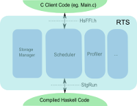

Home
Live profile monitor July 20, 2016
 Another big chunk of work is done for my HSOC project - live-profile-monitor which transfers events to remote profiling tool. Read more...
Another big chunk of work is done for my HSOC project - live-profile-monitor which transfers events to remote profiling tool. Read more...
Live profiling RTS progress June 22, 2016
 During the last week I was implementing base RTS features to support live event logging in GHC. I tried several design choices for eventlog piping to Haskell side, some of them being tempting leads to non-obvious problems with multithreaded environment or causes deadlocks. As a result, RTS now can redirect events into user specified file descriptor and pipe them via extendable memory buffer. Read more...
Live profiling and performance monitoring server June 12, 2016
 HSOC has suddenly received additional funding and my project of improving GHC event logging experience now is among the chosen ones. The post contains the full proposal description and info about mentors. Read more...
HSOC has suddenly received additional funding and my project of improving GHC event logging experience now is among the chosen ones. The post contains the full proposal description and info about mentors. Read more...